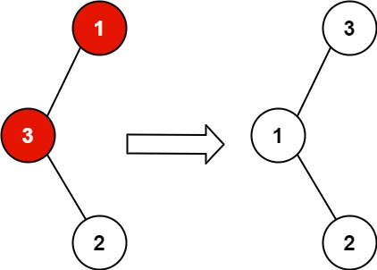

books / company-solutions / Tree
99. 恢复二叉搜索树
| 题目信息 | 内容 |
|---|---|
| 难度 | 中等 |
| 核心模式 | 中序遍历找逆序对，定位被交换的两节点 |
| 时间复杂度 | O(n) |
| 空间复杂度 | O(h)（递归栈；Morris 可做到 O(1)） |
题目与约束
给你二叉搜索树的根节点 root ，该树中的 恰好 两个节点的值被错误地交换。请在不改变其结构的情况下，恢复这棵树 。
示例 1：

<strong>输入：</strong>root = [1,3,null,null,2]
<strong>输出：</strong>[3,1,null,null,2]
<strong>解释：</strong>3 不能是 1 的左孩子，因为 3 > 1 。交换 1 和 3 使二叉搜索树有效。
示例 2：

<strong>输入：</strong>root = [3,1,4,null,null,2]
<strong>输出：</strong>[2,1,4,null,null,3]
<strong>解释：</strong>2 不能在 3 的右子树中，因为 2 < 3 。交换 2 和 3 使二叉搜索树有效。
提示：
-
树上节点的数目在范围
[2, 1000]内 -
-231 <= Node.val <= 231 - 1
进阶：使用 O(n) 空间复杂度的解法很容易实现。你能想出一个只使用 O(1) 空间的解决方案吗？
核心不变量
二叉搜索树的中序遍历序列严格递增；恰好交换两个节点，会在中序序列中产生 1~2 处「前驱 > 当前」的逆序，第一个逆序对的前驱与最后一个逆序对的当前，正是被交换的两节点。
完整推导
思路推导
- 直觉与痛点（BST 的本质是什么？）
二叉搜索树的中序遍历一定得到严格递增序列。题目把两个节点的值互换，相当于在有序序列里打乱了两个位置。
- 逆序对定位（分两种情况）
设中序序列为 a1 < a2 < ... < an，交换后出现逆序：
- 相邻交换（如
1,2,3→ 交换 2、3 得1,3,2）：只有一处逆序3 > 2，两节点就是3和2。 - 不相邻交换（如
1,2,3,4→ 交换 2、4 得1,4,3,2）：出现两处逆序4>3与3>2。被交换的是第一处逆序的前驱4和第二处（最后）逆序的当前2。
- 统一处理（记录 first / second）
遍历中序时维护前驱 prev。每当 prev.val > node.val：若 first 尚未记录就记 first = prev；无论哪种情况都更新 second = node。遍历结束后交换 first 与 second 的值即可——这个写法同时覆盖了上述两种情况。
- 小例子（[1,3,null,null,2]）
中序为 1, 3, 2。走到 2 时 prev=3 > 2，记录 first=3、second=2，交换后中序变 1,2,3，恢复完成。
Java 实现（recoverTree）
class Solution {
private TreeNode first = null; // 第一个被错放的节点
private TreeNode second = null; // 第二个被错放的节点
private TreeNode prev = null; // 中序遍历的前驱
public void recoverTree(TreeNode root) {
inorder(root);
// 交换两个错误节点的值即可，结构不变
int tmp = first.val;
first.val = second.val;
second.val = tmp;
}
private void inorder(TreeNode node) {
if (node == null) return;
inorder(node.left);
// 出现逆序：前驱比当前大
if (prev != null && prev.val > node.val) {
if (first == null) {
first = prev; // 第一处逆序的前驱
}
second = node; // 持续更新为最后一处逆序的当前
}
prev = node;
inorder(node.right);
}
}
复杂度
- 时间：O(n)，每个节点恰好被中序遍历访问一次。
- 空间：O(h)，递归栈深度等于树高，最坏 O(n)、平衡时 O(log n)。
易错点与扩展（面试高频考点）
- 只记录 first 不更新 second：不相邻交换时会出现两处逆序，
second必须每遇到逆序都刷新，否则找错节点。 - 交换的是值而非节点：题目允许直接改值，交换
val最简单；若要求交换节点指针则复杂得多，需谨慎处理父子关系。 - Morris 中序遍历（进阶 O(1) 空间）：利用叶子节点的空右指针临时指回中序前驱，遍历时完成比较，结束后恢复指针，可将空间降到 O(1)。
prev初值：必须是null，不能想当然设为MIN_VALUE的节点，否则第一处比较会误判。- 节点数 ≥ 2：题目保证恰好两个节点被交换，因此
first、second一定非空，无需额外判空。
力扣原题
C++ 实现
class Solution {
TreeNode* first = nullptr;
TreeNode* second = nullptr;
TreeNode* prev = nullptr;
void inorder(TreeNode* node) {
if (!node) return;
inorder(node->left);
if (prev && prev->val > node->val) {
if (!first) first = prev;
second = node;
}
prev = node;
inorder(node->right);
}
public:
void recoverTree(TreeNode* root) {
inorder(root);
swap(first->val, second->val);
}
};
Python 实现
class Solution:
def recoverTree(self, root: Optional[TreeNode]) -> None:
self.first = None
self.second = None
self.prev = None
def inorder(node):
if not node:
return
inorder(node.left)
if self.prev and self.prev.val > node.val:
if self.first is None:
self.first = self.prev
self.second = node
self.prev = node
inorder(node.right)
inorder(root)
# 交换两个错误节点的值
self.first.val, self.second.val = self.second.val, self.first.val